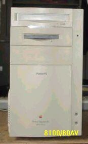
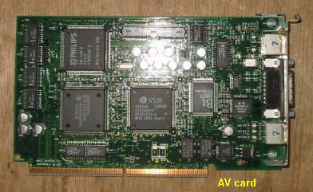

8100/80AVについて

PowerPC601を使用したMacimtoshの最上位機種として、１９９４年に登場。当時、会社の備品として１式８０万円位
のものを購入した記憶がある。PowerPCではあるが、期待したほどの速度はなく、がっかりしたような声もあった。
今回、H-OにHDD無しで１０００円で、棚にではなく床に置かれてあったのを保護した。HDDにはSEAGATEのST11200N
を入れ、動作するようにして保管してある。()2003/04/16 記)

AVカードも抜かれていたので、6100か7100から外したのを取り付けた。
（2003/04/16 記）
PPCマッキントッシュのページに戻る